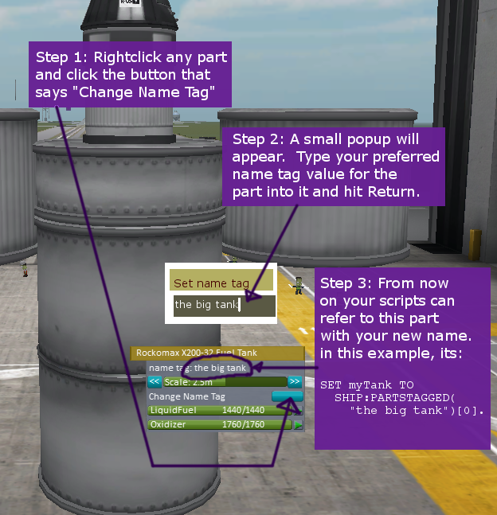

The Name Tag System

One useful thing to do is to be able to give parts on a craft your own chosen names that you can use to get a reference to the parts, utterly bypassing the naming schemes used by KSP, and ignoring the complex part tree system.
The Name Tag system was designed to make it possible for you to just give any part on a craft whatever arbitrary name you feel like.
Giving a part a name
-
Right click on any part. You can do this in either the editor VAB/SPH, or during flight. It is more useful to do beforehand when making the craft, but you can do it in the midst of a flight, which is useful for experimenting and testing.
-
Click the "change name tag" button. A small text popup will appear with the ability to type a name for the part. Type any value you like. In the example picture here, the value "the big tank" was typed in.
-
From now on this part can be retrieved using either the :PARTSDUBBED or the :PARTSTAGGED methods of the vessel, as described on the Vessel Page
Cloning with symmetry
If you name a part in the editor first, and then remove it from the vessel and place it again with symmetry, all the symmetry copies of the part will get the same nametag cloned to them. This is not an error. It is allowed to give the same nametag to more than one part. If you do this, it just means that the :PARTSTAGGED or :PARTSDUBBED methods will return lists containing more than one part.
If you want each part in a symmetrical group to get a unique nametag, you can change their names one at a time after you've placed the parts.
Where is it saved?
If you add a nametag to a part in the editor (VAB or SPH), then that nametag will get saved inside the craft file for that vessel design. All new instances of that craft design that you launch will get the same nametag configuration on them.
On the other hand, if you added a nametag to a part after the vessel was launched, during flight or on the launchpad, then that nametag will only be attached to that part on that one instance of the vessel. Other copies of the same design won't have the name. In this case the name is saved inside the saved game's persistence file, but not in the editor's craft design file.
Examples of using the name
SET myPart TO SHIP:PARTSDUBBED("my nametag here")[0]. // Only if you expected to get exactly 1 such part, no more, no less.
// OR
SET myPart TO SHIP:PARTSTAGGED("my nametag here")[0]. // Only if you expected to get exactly 1 such part, no more, no less.
// Handling the case of more than one part with the same nametag,
// or the case of zero parts with the name:
// ----------------------------------------------------------------
SET allSuchParts TO SHIP:PARTSDUBBED("my nametag here").
// OR
SET allSuchParts TO SHIP:PARTSTAGGED("my nametag here").
//
// Followed by using the list returned:
FOR onePart IN allSuchParts {
// do something with onePart here.
}.
The fuller documentation on how this system works is here.